Table of contents |
Author: Johannes Buchner Homepage: http://astrost.at/istics/ Further information: The hidden SMBH population over cosmic timeAbstract: The growth of Supermassive Black Holes (SMBHs) lights up galaxies spectacularly and likely shapes them. I will discuss my observational and theoretical research constraining the underlying SMBH population from their seeding down to the giants we see in the local Universe. Obscuration and low levels of activity make detecting SMBH challenging and require advanced techniques. We can shed light on the surroundings of growing SMBHs on various scales through measurements of the accretion history up to the highest levels of obscurations and with independent measurements on the effects of galaxy-scale gas. I will conclude with my current work on improving models and observations of clumpy sub-parsec obscuration with eROSITA.  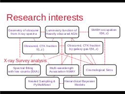
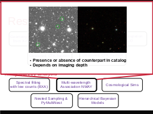
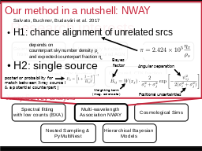
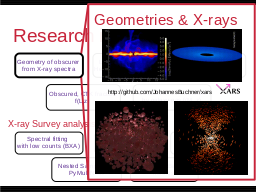
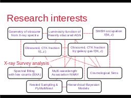
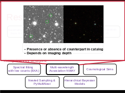
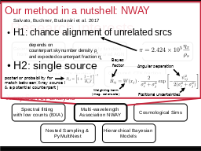
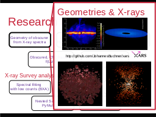
 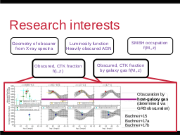
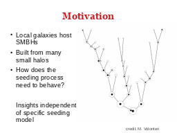
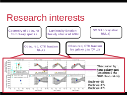
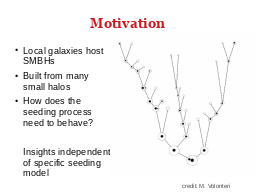

 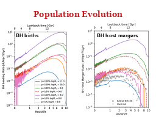
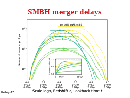
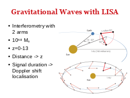
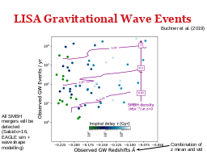
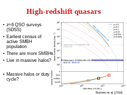
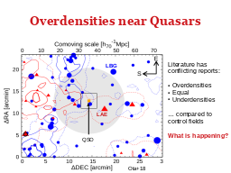
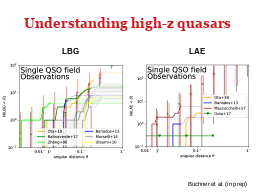
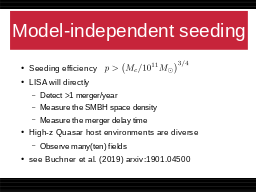
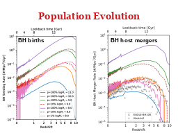
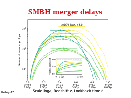
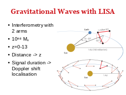
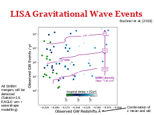
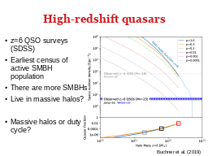
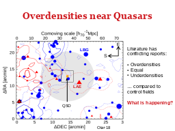
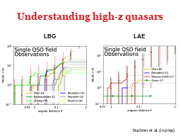
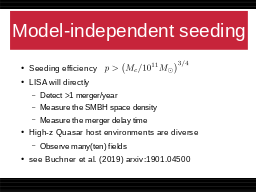
 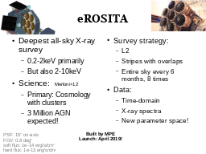
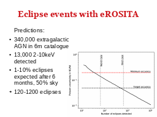
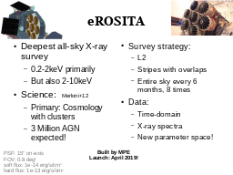
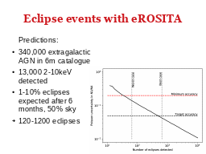
|